Overview
This vignette demonstrates Time Aware Trajectory Analysis (TATA), a PAGA-inspired trajectory abstraction that uses real experimental time labels to score and direct cluster-level transitions.
The workflow below:
- simulates a center-rooted multi-drug time course
- visualizes the stored PCA and UMAP representations
- builds the cell-level kNN graph and graph-based clusters
- computes topology and time-consistency scores between clusters
- constructs the abstract TATA graph
- runs the one-step
run_tata()wrapper and overlays the inferred trajectories
The simulation is intentionally awkward for topology-only methods because the earliest cells are near the middle of the embedding rather than at a clear tip.
Load packages
library(SingleCellExperiment)
#> Loading required package: SummarizedExperiment
#> Loading required package: MatrixGenerics
#> Loading required package: matrixStats
#>
#> Attaching package: 'MatrixGenerics'
#> The following objects are masked from 'package:matrixStats':
#>
#> colAlls, colAnyNAs, colAnys, colAvgsPerRowSet, colCollapse,
#> colCounts, colCummaxs, colCummins, colCumprods, colCumsums,
#> colDiffs, colIQRDiffs, colIQRs, colLogSumExps, colMadDiffs,
#> colMads, colMaxs, colMeans2, colMedians, colMins, colOrderStats,
#> colProds, colQuantiles, colRanges, colRanks, colSdDiffs, colSds,
#> colSums2, colTabulates, colVarDiffs, colVars, colWeightedMads,
#> colWeightedMeans, colWeightedMedians, colWeightedSds,
#> colWeightedVars, rowAlls, rowAnyNAs, rowAnys, rowAvgsPerColSet,
#> rowCollapse, rowCounts, rowCummaxs, rowCummins, rowCumprods,
#> rowCumsums, rowDiffs, rowIQRDiffs, rowIQRs, rowLogSumExps,
#> rowMadDiffs, rowMads, rowMaxs, rowMeans2, rowMedians, rowMins,
#> rowOrderStats, rowProds, rowQuantiles, rowRanges, rowRanks,
#> rowSdDiffs, rowSds, rowSums2, rowTabulates, rowVarDiffs, rowVars,
#> rowWeightedMads, rowWeightedMeans, rowWeightedMedians,
#> rowWeightedSds, rowWeightedVars
#> Loading required package: GenomicRanges
#> Loading required package: stats4
#> Loading required package: BiocGenerics
#> Loading required package: generics
#>
#> Attaching package: 'generics'
#> The following objects are masked from 'package:base':
#>
#> as.difftime, as.factor, as.ordered, intersect, is.element, setdiff,
#> setequal, union
#>
#> Attaching package: 'BiocGenerics'
#> The following objects are masked from 'package:stats':
#>
#> IQR, mad, sd, var, xtabs
#> The following objects are masked from 'package:base':
#>
#> anyDuplicated, aperm, append, as.data.frame, basename, cbind,
#> colnames, dirname, do.call, duplicated, eval, evalq, Filter, Find,
#> get, grep, grepl, is.unsorted, lapply, Map, mapply, match, mget,
#> order, paste, pmax, pmax.int, pmin, pmin.int, Position, rank,
#> rbind, Reduce, rownames, sapply, saveRDS, table, tapply, unique,
#> unsplit, which.max, which.min
#> Loading required package: S4Vectors
#>
#> Attaching package: 'S4Vectors'
#> The following object is masked from 'package:utils':
#>
#> findMatches
#> The following objects are masked from 'package:base':
#>
#> expand.grid, I, unname
#> Loading required package: IRanges
#> Loading required package: Seqinfo
#> Loading required package: Biobase
#> Welcome to Bioconductor
#>
#> Vignettes contain introductory material; view with
#> 'browseVignettes()'. To cite Bioconductor, see
#> 'citation("Biobase")', and for packages 'citation("pkgname")'.
#>
#> Attaching package: 'Biobase'
#> The following object is masked from 'package:MatrixGenerics':
#>
#> rowMedians
#> The following objects are masked from 'package:matrixStats':
#>
#> anyMissing, rowMedians
library(SummarizedExperiment)Simulate a multi-drug trajectory
set.seed(101)
sce <- simulate_tata_multidrug_sce(
n_cells = 2500,
n_features = 100,
n_pcs = 20,
seed = 101
)
sce$timepoint_factor <- factor(
sce$timepoint,
levels = sort(unique(sce$timepoint))
)Inspect the simulation design:
with(as.data.frame(SummarizedExperiment::colData(sce)), table(condition, timepoint))
#> timepoint
#> condition 0 24 48 72 96 120
#> drug_A 134 138 135 151 135 138
#> drug_B 166 122 167 138 167 115
#> drug_C 153 103 160 115 160 103Visualize the stored embedding:
PlotReduction(sce, reduction = "UMAP", colour_by = "timepoint_factor")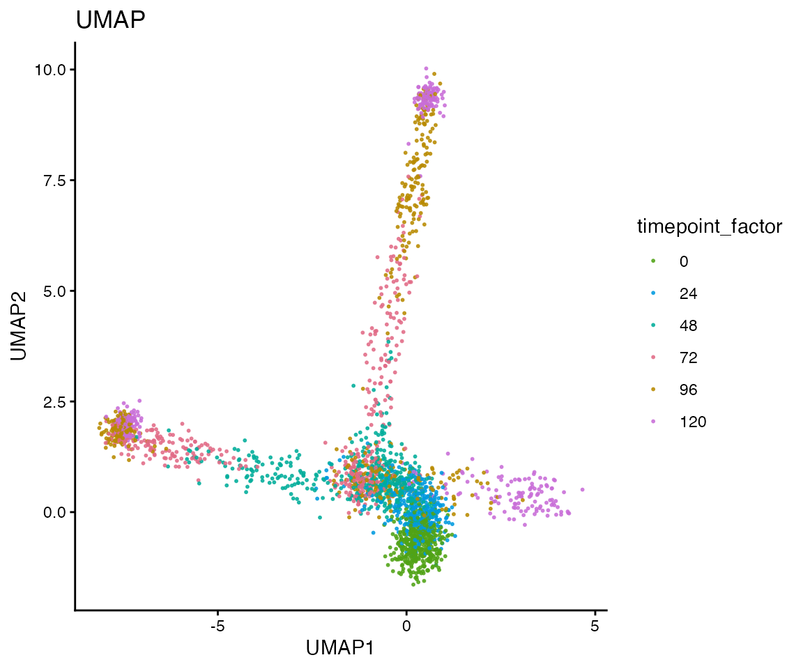
PlotReduction(sce, reduction = "UMAP", colour_by = "condition")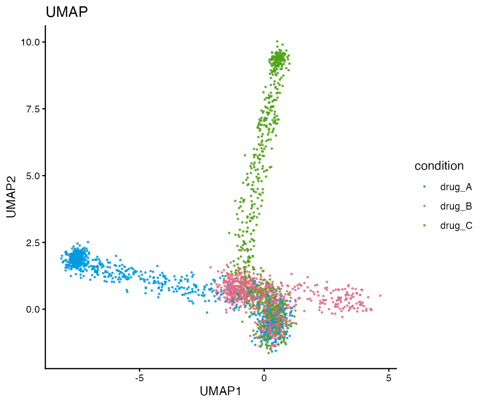
PlotReduction(sce, reduction = "UMAP", colour_by = "simulated_state")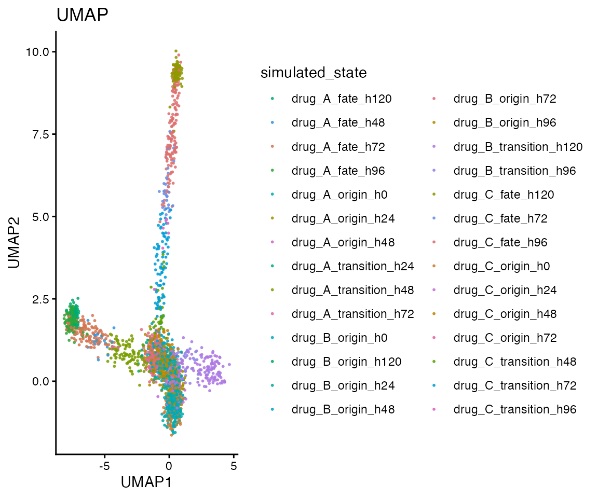
Build the cell-cell graph
TATA starts from a low-dimensional representation. Here we use the stored PCA coordinates and connect each cell to its nearest neighbours.
knn <- build_knn_graph(
x = sce,
dimred = "PCA",
k = 30
)
c(
n_cells = igraph::vcount(knn$graph),
n_edges = igraph::ecount(knn$graph),
k = knn$k
)
#> n_cells n_edges k
#> 2500 45687 30Cluster cells into coarse states
The cell graph is clustered into coarse states that serve as nodes in the abstract TATA graph.
sce$tata_cluster_step <- factor(
cluster_graph_states(
cell_graph = knn$graph,
method = "louvain",
seed = 101
)
)
table(sce$tata_cluster_step)
#>
#> C1 C2 C3 C4 C5 C6 C7 C8 C9 C10 C11 C12 C13 C14 C15
#> 233 104 314 163 320 116 192 150 167 130 194 146 129 61 81
PlotReduction(sce, reduction = "UMAP", colour_by = "tata_cluster_step")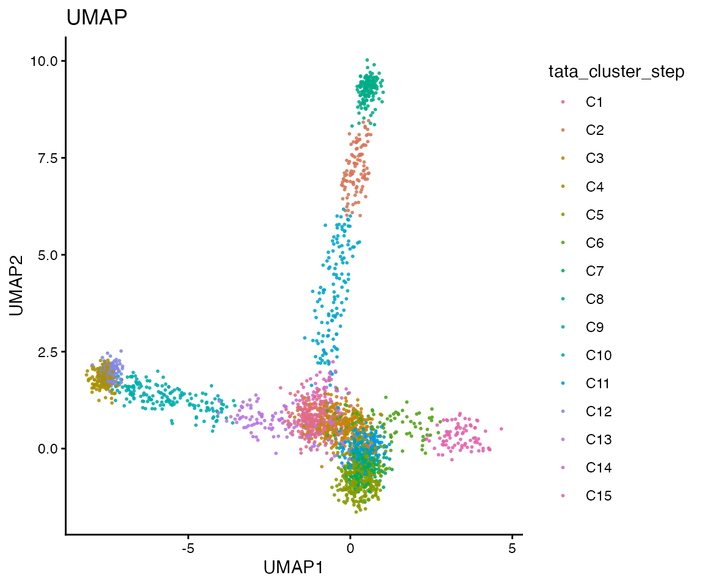
Compute topology and time scores
TATA combines two ingredients for each cluster pair:
- a topology score based on how strongly the two clusters are connected in the cell-cell graph
- a time-consistency score based on whether those inter-cluster edges follow the observed experimental time order
topology_table <- compute_topology_weights(
adjacency = knn$adjacency,
clusters = sce$tata_cluster_step
)
time_table <- compute_time_weights(
adjacency = knn$adjacency,
clusters = sce$tata_cluster_step,
timepoint = sce$timepoint
)
head(
topology_table[
order(-topology_table$topology_weight),
c("cluster_a", "cluster_b", "observed_edges", "expected_edges", "topology_weight")
],
8
)
#> cluster_a cluster_b observed_edges expected_edges topology_weight
#> 94 C10 C14 99 101.7095 0.9733601
#> 73 C7 C11 555 577.9481 0.9602938
#> 69 C6 C15 98 115.5356 0.8482237
#> 52 C5 C7 611 933.1478 0.6547730
#> 22 C2 C10 106 174.5939 0.6071232
#> 38 C3 C14 152 267.1860 0.5688922
#> 20 C2 C8 105 217.1197 0.4836041
#> 35 C3 C11 400 984.3900 0.4063430
head(
time_table[
order(-time_table$time_consistency),
c("cluster_a", "cluster_b", "n_time_edges", "flow_score", "time_weight", "time_consistency")
],
8
)
#> cluster_a cluster_b n_time_edges flow_score time_weight time_consistency
#> 98 C11 C14 13 1.0000000 1.0000000 1.0000000
#> 103 C13 C14 15 0.5333333 0.7666667 0.7666667
#> 13 C1 C14 6 0.5000000 0.7500000 0.7500000
#> 56 C5 C11 2 0.5000000 0.7500000 0.7500000
#> 97 C11 C13 91 0.3406593 0.6703297 0.6703297
#> 94 C10 C14 99 -0.3333333 0.3333333 0.6666667
#> 47 C4 C12 127 0.3307087 0.6653543 0.6653543
#> 35 C3 C11 400 -0.3125000 0.3437500 0.6562500
edge_metric_table <- merge(
topology_table,
time_table,
by = c("cluster_a", "cluster_b"),
all.x = TRUE,
sort = FALSE
)
ggplot2::ggplot(
edge_metric_table,
ggplot2::aes(
x = topology_weight,
y = flow_score,
size = observed_edges,
colour = time_consistency
)
) +
ggplot2::geom_hline(yintercept = c(-0.10, 0.10), linetype = 2, colour = "grey60") +
ggplot2::geom_point(alpha = 0.8) +
ggplot2::scale_colour_viridis_c(option = "plasma") +
ggplot2::theme_classic() +
ggplot2::labs(
title = "Topology and time consistency for cluster pairs",
x = "topology weight",
y = "temporal flow score",
colour = "time consistency",
size = "observed edges"
)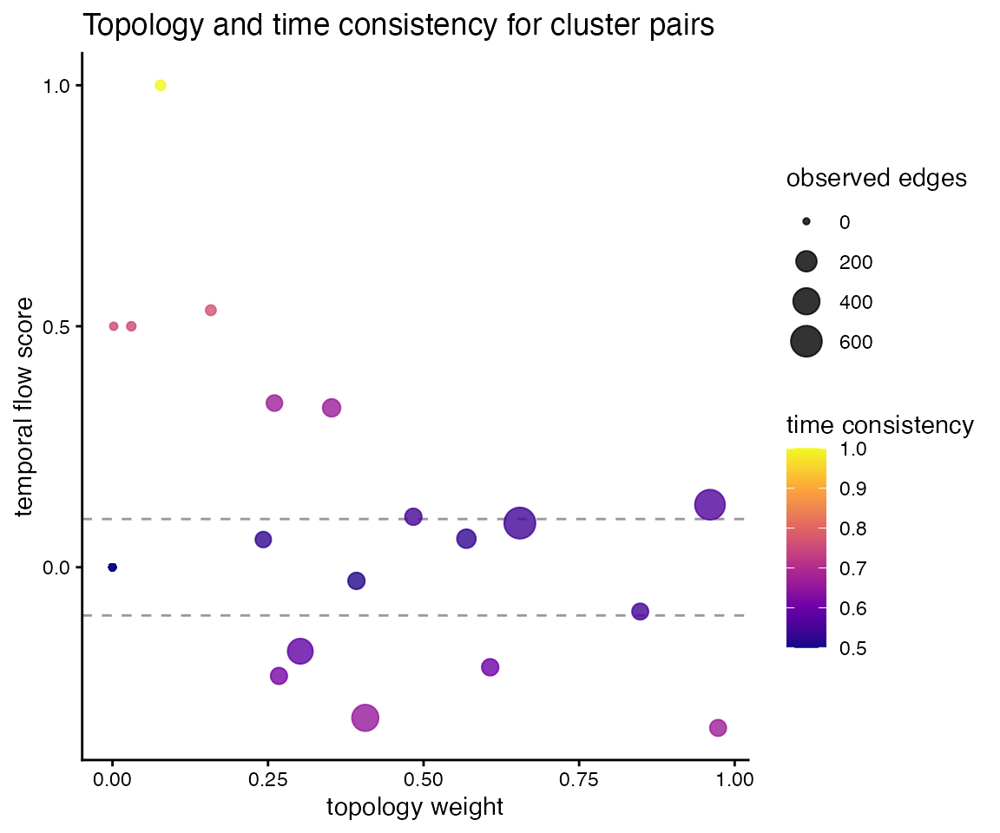
Build the abstract TATA graph
tata_manual <- build_tata_graph(
topology_table = topology_table,
time_table = time_table,
clusters = sce$tata_cluster_step,
embedding = SingleCellExperiment::reducedDim(sce, "PCA"),
timepoint = sce$timepoint,
alpha = 1,
beta = 1,
direction_threshold = 0.10,
prune_threshold = 0.001,
time_weight_mode = "directional_confidence"
)
head(
tata_manual$edge_table[
order(-tata_manual$edge_table$tata_weight),
c(
"cluster_a",
"cluster_b",
"topology_weight",
"flow_score",
"time_weight",
"time_consistency",
"tata_weight",
"direction_label",
"kept"
)
],
10
)
#> cluster_a cluster_b topology_weight flow_score time_weight time_consistency
#> 94 C10 C14 0.9733601 -0.33333333 0.3333333 0.6666667
#> 73 C7 C11 0.9602938 0.12972973 0.5648649 0.5648649
#> 69 C6 C15 0.8482237 -0.09183673 0.4540816 0.5459184
#> 22 C2 C10 0.6071232 -0.20754717 0.3962264 0.6037736
#> 52 C5 C7 0.6547730 0.09165303 0.5458265 0.5458265
#> 38 C3 C14 0.5688922 0.05921053 0.5296053 0.5296053
#> 20 C2 C8 0.4836041 0.10476190 0.5523810 0.5523810
#> 35 C3 C11 0.4063430 -0.31250000 0.3437500 0.6562500
#> 47 C4 C12 0.3522126 0.33070866 0.6653543 0.6653543
#> 88 C9 C13 0.3921301 -0.02830189 0.4858491 0.5141509
#> tata_weight direction_label kept
#> 94 0.6489067 C14 -> C10 TRUE
#> 73 0.5424362 C7 -> C11 TRUE
#> 69 0.4630609 C6 -- C15 TRUE
#> 22 0.3665649 C10 -> C2 TRUE
#> 52 0.3573925 C5 -- C7 TRUE
#> 38 0.3012883 C3 -- C14 TRUE
#> 20 0.2671337 C2 -> C8 TRUE
#> 35 0.2666626 C11 -> C3 TRUE
#> 47 0.2343462 C4 -> C12 TRUE
#> 88 0.2016140 C9 -- C13 TRUEThe cluster graph is easiest to interpret when it is overlaid onto the same embedding used to view the cells:
plot_tata_cluster_graph(
list(
cluster_graph = tata_manual$graph,
sce = sce,
parameters = list(cluster_col = "tata_cluster_step")
),
dimred = "UMAP",
layout_mode = "embedding",
show_cells = TRUE,
colour_by = "tata_cluster_step",
node_colour_by = "cluster",
main = "Manual TATA graph aligned to UMAP"
)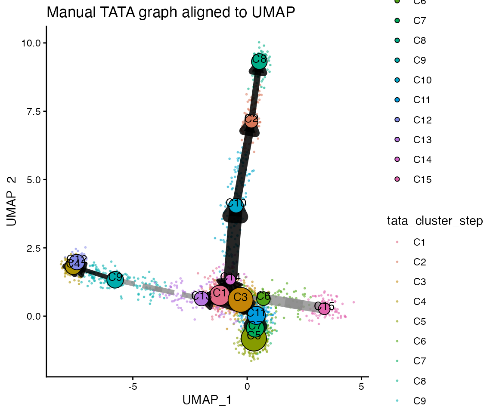
Run the full wrapper
For most analyses it is simpler to call run_tata()
directly and let the package carry out graph construction, clustering,
edge scoring, and pseudotime.
tata <- run_tata(
sce = sce,
dimred = "PCA",
time_col = "timepoint",
cluster_col = "tata_cluster",
k = 30,
cluster_method = "louvain",
alpha = 1,
beta = 1,
direction_threshold = 0.10,
prune_threshold = 0.001,
time_weight_mode = "directional_confidence",
do_pseudotime = TRUE,
seed = 101
)
sce_tata <- tata$sce
sce_tata$tata_cluster <- factor(sce_tata$tata_cluster)Inspect the wrapper output on the embedding:
PlotReduction(sce_tata, reduction = "UMAP", colour_by = "tata_cluster")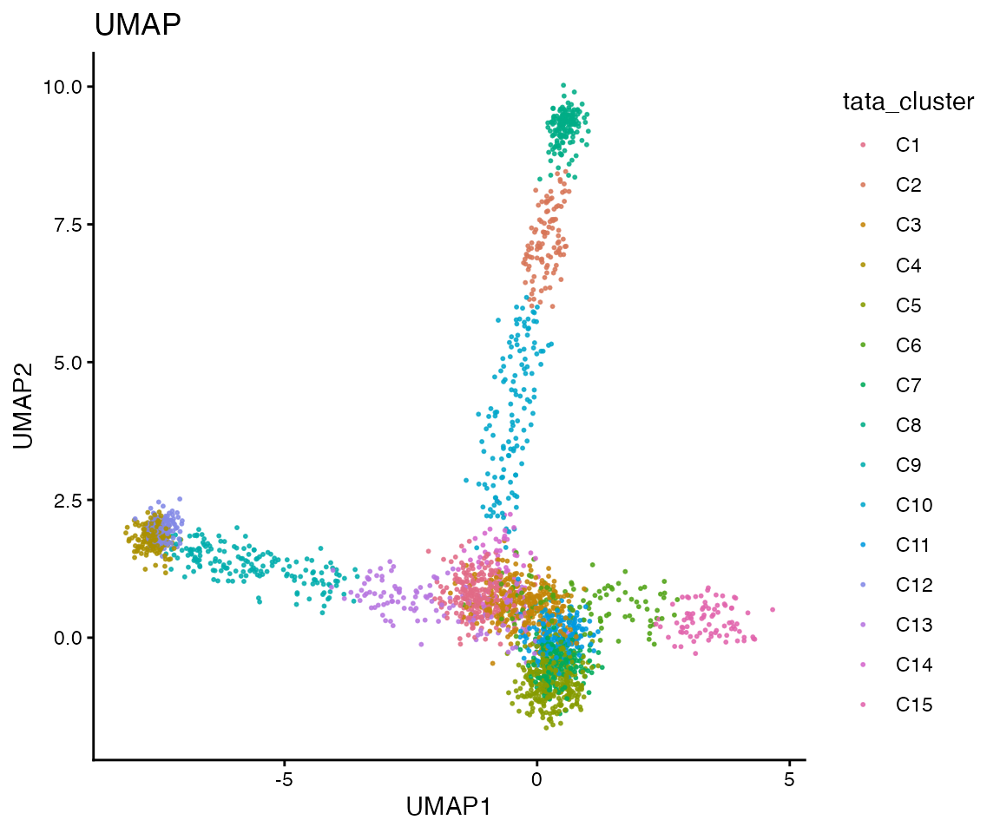
PlotReduction(sce_tata, reduction = "UMAP", colour_by = "tata_pseudotime_scaled")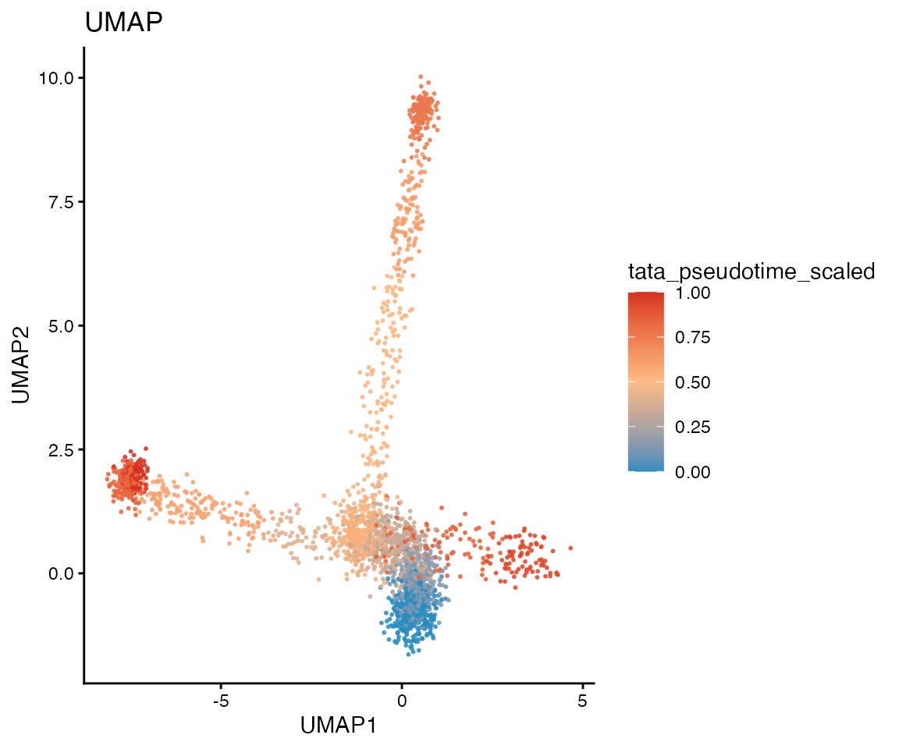
plot_tata_cluster_graph(
tata,
dimred = "UMAP",
layout_mode = "embedding",
show_cells = TRUE,
colour_by = "timepoint",
node_colour_by = "cluster",
main = "TATA abstract graph aligned to UMAP"
)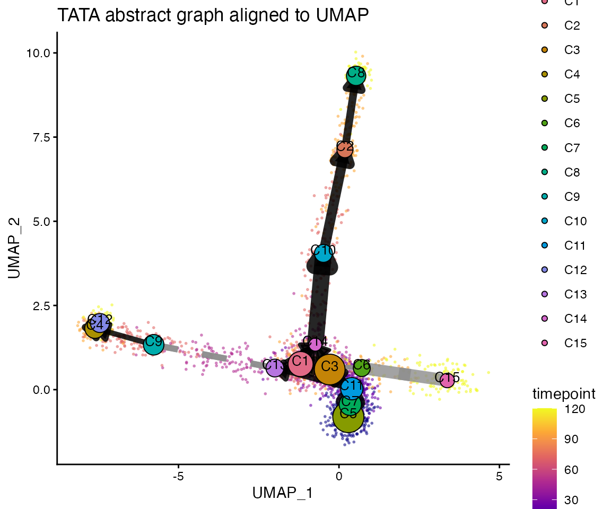
plot_tata_trajectory_embedding() provides a more classic
trajectory overlay. Use mode = "full" to draw all inferred
paths or mode = "combined" to show one long summary arrow
per major branch.
plot_tata_trajectory_embedding(
tata,
dimred = "UMAP",
colour_by = "timepoint",
mode = "full",
smooth_paths = TRUE
)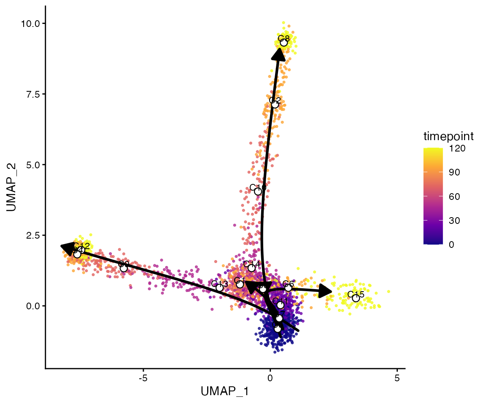
plot_tata_trajectory_embedding(
tata,
dimred = "UMAP",
colour_by = "timepoint",
mode = "combined",
max_paths = 3,
smooth_paths = TRUE
)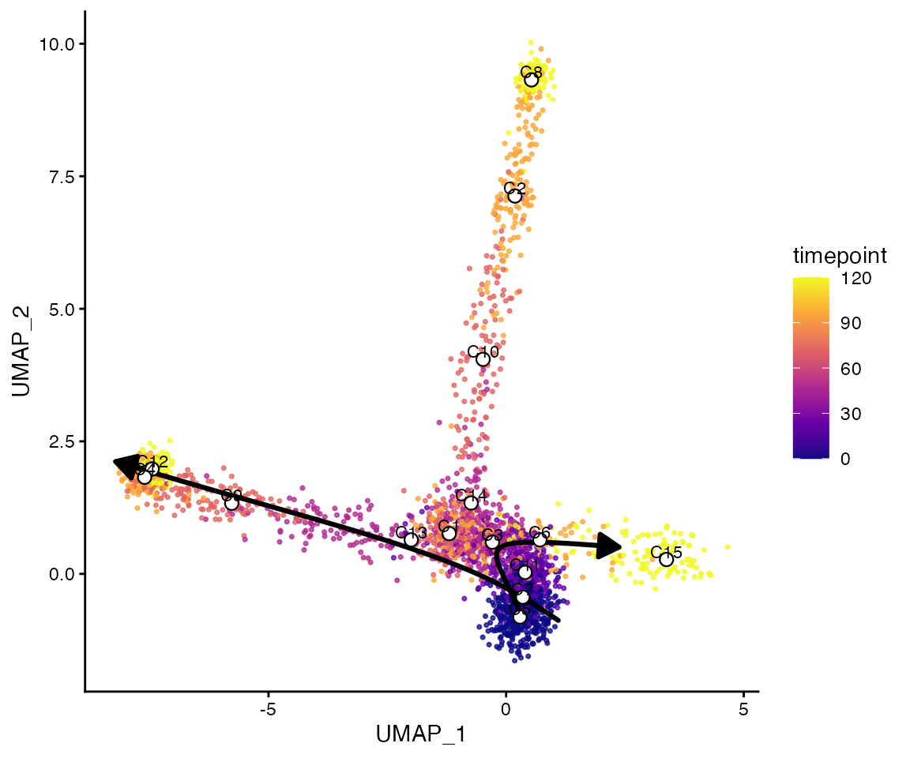
Notes
-
build_knn_graph(),compute_topology_weights(), andcompute_time_weights()are available separately for manual inspection and method development. -
plot_tata_cluster_graph()places the abstract graph either in a graph-only layout or directly on top of a chosen embedding. -
plot_tata_trajectory_embedding()is useful when you want a simpler trajectory-style overlay rather than the full abstract graph.